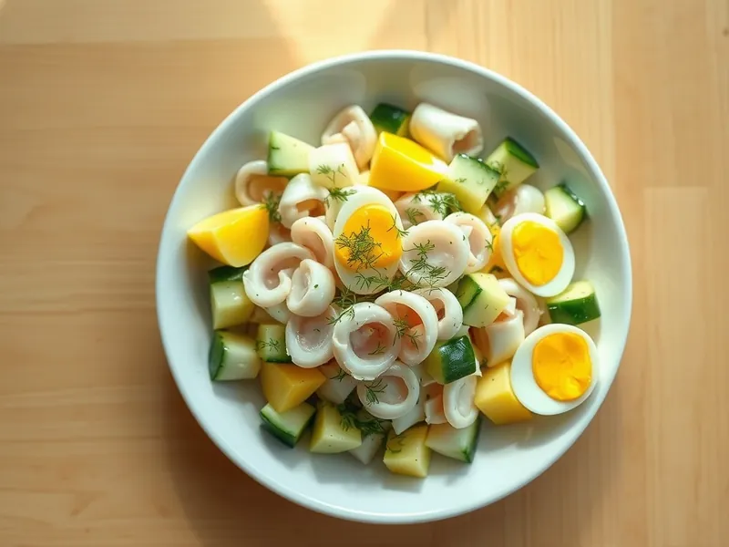

Фото: Иллюстрация ИИ, Cloudflare Workers AI
Салат с кальмарами, яйцом и огурцом
Классический домашний салат из отварных кальмаров с яйцом, огурцом и луком
25 мин3 порц.415 ккал на порциюБ 38 · Ж 26 · У 7Русская кухня
Продукты на 3 порц.
- Кальмар500 г
- Яйцо куриное3 шт
- Огурцы2 шт
- Зелёный лук20 г
- Укроп10 г
- Майонез2,5 ст. л.
- Соль1 ч. л.
- Перец чёрный молотыйпо вкусу
Как готовить
- Отварите яйца 10 минут, остудите в холодной воде и нарежьте кубиками.
- Очистите кальмары от плёнки и хорды. Опустите в кипящую подсоленную воду ровно на 1,5-2 минуты, пока тушки не станут белыми, и сразу выньте в холодную воду.
- Нарежьте кальмары тонкими кольцами или соломкой, огурцы соломкой, зелёный лук и укроп мелко.
- Смешайте всё в миске, заправьте майонезом, посолите и поперчите по вкусу.
Совет. Кальмар варят либо до 2 минут, либо уже 40 минут. Всё, что посередине, делает его жёстким, как резина.